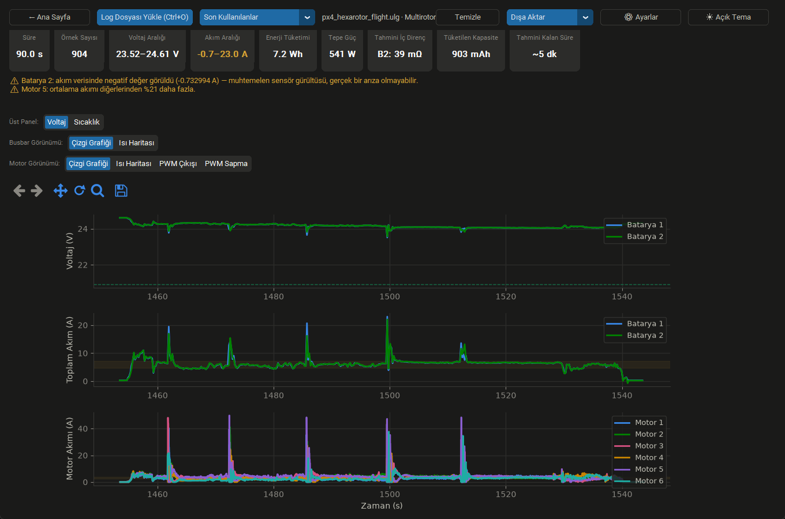
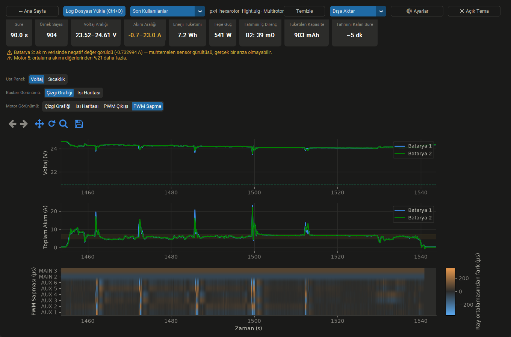
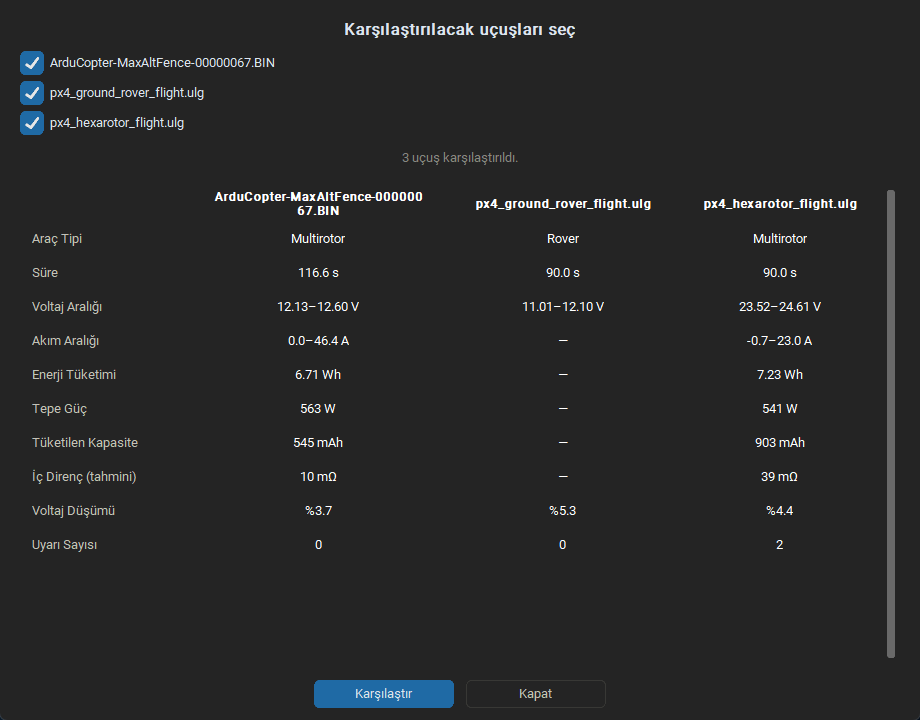
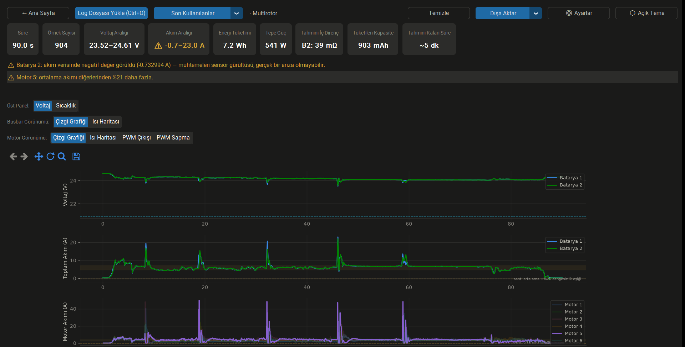

İHA Güç/Telemetri Log Analiz Aracı
ArduPilot ve PX4 uçuş loglarınızı tamamen çevrimdışı, yerel ortamınızda saniyeler içinde analiz edin. Gelişmiş güç grafikleri ve kural tabanlı donanım uyarıları ile uçuş güvenliğinizi maksimuma çıkarın.
İndir (Windows, 31,5 MB)Bir uçuş garip gitti — batarya beklenenden hızlı bitti, bir motor fazla ısındı. Ham log dosyasında yüzlerce satır arasında kaybolmak yerine, bu araç o karmaşayı saniyeler içinde anlaşılır grafiklere ve otomatik uyarılara çevirir.
Nasıl Çalışır?
Uçuş ve Kayıt
Drone uçar ve uçuş kontrolcüsü görev boyunca log kaydını otomatik olarak tutar.
Bilgisayara Aktarım
SD karttan veya yer istasyonu yazılımıyla (Mission Planner, QGroundControl) log dosyası (.bin/.ulg) bilgisayara indirilir.
Uygulamaya Yükleme
Log dosyası "Dosya Yükle" butonuyla masaüstü uygulamasına yüklenir.
Anında Analiz
Grafikler, ısı haritaları ve kural tabanlı otomatik uyarılar saniyeler içinde sistemde hazır olur.
Kimler İçin?
TEKNOFEST ve üniversite yarışma takımları
İHA geliştiren mühendisler
Hobiciler
Eğitmenler
Uygulama Özellikleri
Batarya Voltaj/Akım Grafikleri
Uçuş sırasındaki batarya gerilim düşümlerini ve çekilen anlık/toplam akımı detaylı bir zaman çizelgesinde inceleyin.
Motor Bazında Akım Analizi
ESC ve motorların bireysel olarak ne kadar akım çektiğini analiz ederek itki sistemindeki dengesizlikleri tespit edin.
Çizgi Grafiği & Isı Haritası
Verileri detaylı çizgi grafikleriyle zaman tabanlı okuyun veya ısı haritası görünümleriyle anormallikleri bir bakışta fark edin.
Otomatik Uyarı Sistemi
Kural tabanlı çalışan uyarı motoru, voltaj düşümü ve motor akım dengesizliği gibi teknik donanım sorunlarını otomatik tespit edip uyarı üretir.
Çoklu Batarya Desteği
Sistemde birden fazla batarya/Power Module kullanılıyorsa, tüm güç kaynaklarının durumunu eşzamanlı olarak görüntüleyin.
PNG Olarak Kaydetme
Raporlama ve takım sunumları için oluşturulan grafikleri tek tıkla PNG formatında kaydedin.
Uygulama bunu sizin için otomatik yakalar.
Arayüz İncelemesi

Genel uçuş profili ve batarya güç tüketim grafikleri.

PWM sapma ısı haritasıyla motorlar arası dengesizlikleri bir bakışta fark edin.

Birden fazla uçuşun özet metriklerini yan yana karşılaştırın.

Bir uyarıya tıklayın, ilgili motor/batarya grafikte anında öne çıksın.
Sıkça Sorulan Sorular
Verilerim güvende mi?
Tamamen çevrimdışı çalışır, hiçbir veri dışarı gönderilmez, açık kaynaktır.
Drone'a bağlanıyor mu?
Hayır, canlı bağlantı yok. Uçuştan sonra log dosyasını (.bin/.ulog) yükleyip analiz edersiniz (post-flight).
Hangi uçuş kontrolcülerini destekler?
ArduPilot (.bin) ve PX4 (.ulog/.ulg).
Hangi araç tiplerini destekler?
Multirotor, sabit kanat, rover, VTOL.
Ücretsiz mi?
Evet, MIT lisansı ile tamamen açık kaynak ve ücretsiz.
Hangi işletim sistemlerinde çalışır?
Şu an Windows.
Kaynaklar
- Kaynak Kodu: GitHub Deposunu İncele
- ArduPilot: Resmi Dokümantasyon
- PX4 Autopilot: Resmi Dokümantasyon
- Lisans: Bu proje MIT Lisansı ile açık kaynaklı olarak sunulmaktadır. Kodlar özgürce incelenebilir, değiştirilebilir ve hem bireysel hem ticari projelerde kullanılabilir.
Gizlilik Politikası
Uygulama tamamen bilgisayarınızda, çevrimdışı çalışır. Hiçbir kişisel veri toplanmaz, log dosyalarınız veya uçuş verileriniz cihazınızdan dışarı gönderilmez. Kod açık kaynaktır, dileyen herkes sistemin şeffaflığını GitHub üzerinden inceleyebilir.
Hata Bildir / Öneri Yap
Bir hata mı buldunuz, yoksa aklınızda bir özellik önerisi mi var? GitHub Issues üzerinden bize ulaşabilirsiniz.
GitHub Issues'a Git